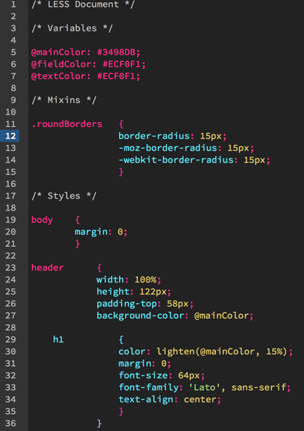

LESS Introduktion
CSS-koder blir lätt långa, komplicerade och med tiden svårare att underhålla. Dessutom förekommer ofta upprepning av samma kod till olika ID:s och Klasser. LESS kan lättare hjälpa dig att vara organiserad. Du kan använda dig av funktionalitet som inte finns tillgänglig i CSS för att hålla din kod enklare.
Funktioner som:
- Nästling
- Variabler
- Mixins